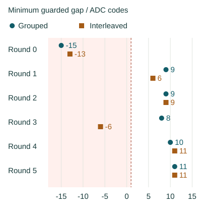

Question and rationale
The two interleaved-reference boots each accepted all six calibrations, recognized all 324 triggered candidate medians and separated all 120 perturbed neighbouring reference pairs. The preceding grouped-reference boot rejected its first calibration, leaving 54 held-out outcomes unavailable. These separate boots cannot identify acquisition order as the cause of the difference.
This comparison acquires both mixed-reference orders in every round and applies both frozen calibrations to the same subsequent held-out triples. It replaces the nominal-reference block with a mixed-reference block, keeping the total reading count, request interval, guard and held-out sequence. Reversing which block is first permits separate comparisons when interleaved references are older and when they are younger.
The repeat also retained a one-code accepted probe margin at state 0. Calibration acceptance and correct counts will therefore be reported alongside boundary margins. No minimum margin is selected after observing the return.
Acquisition sequence
One boot contains six rounds of 648 readings: 216 first references, 216 second references and 216 held-out readings. There are 3888 readings in total. Quantities below use decimal notation.
| Round | First block | Second block |
|---|---|---|
| 0 | Grouped | Interleaved |
| 1 | Interleaved | Grouped |
| 2 | Grouped | Interleaved |
| 3 | Interleaved | Grouped |
| 4 | Grouped | Interleaved |
| 5 | Interleaved | Grouped |
- Collect the first reference block. Acquire twelve non-overlapping three-reading medians per state and freeze the calibration using the existing one-third-gap rule.
- Collect the other reference order. Acquire the same number of medians and offset counts, then freeze its calibration independently. Held-out observations never modify either calibration.
- Evaluate the same observations. Each of eighteen held-out trials contains prime A, request B without triggering, trigger B, and probe B. Each stage contains three readings. Both calibrations recognize each completed median; the requested identity is used only to assess their outputs.
Each reference order receives four medians at every interior offset −1, 0 and +1. Outer states receive four nominal and eight inward medians. Requests remain within control codes 90–105. Guard 2, zero added acquisition wait, 1000 microseconds of pre-ADC settling, readbacks and restoration remain unchanged. Control-code steps are not independently calibrated voltage increments.
Exact schedules and storage coordinates
Grouped references retain the grouped schedule: state = (position + round + 3) modulo 6, with twelve consecutive triples per state; offset = (triple + round) modulo 3 − 1, redirecting outward outer-state offsets inward. Interleaved references retain the pair schedule, including both endpoint orders and the 5/0 outer control.
For selector 2, reference order = (round + block) modulo 2, where block 0 or 1 identifies the first or second acquisition. Grouped reference slot is the triple within that state's group. Interleaved slot is repetition + 6 × endpoint. First-block raw storage uses group = slot divided by 2, rounded down, and reading = 3 × (slot modulo 2) + reading within triple. This assigns all 36 raw positions per state exactly once and preserves each median's three inputs.
The held-out sequence remains unchanged: eighteen trials per round and all 36 A/B pairs over six rounds, with each nominal probe offset once per A/B pair before outer-state redirection. There are 324 triggered and 108 omitted-trigger medians. Both calibrations evaluate every scheduled median.
Assessment fixed before acquisition
First establish matching preparation identity, complete recoverable records, request and ADC diagnostics, ordered counter observations and restoration. Reconstruct both reference calibrations and every native decision from raw readings. Missing or rejected calibrations retain all affected outcomes as unavailable. Preserve round 0 and all recorded exceptions.
- Complete recognition, separately for each reference order: all six calibrations accepted and all 324 triggered medians correct: 252 unperturbed and 72 perturbed. Report wrong, rejected and unavailable outcomes separately.
- Trigger controls: all 108 omitted-trigger triples retain the preceding last raw A value; all 90 changed-state trials update numerically at the first triggered B reading. The 18 self-transitions remain separate. Recognition of retained results as A is descriptive and does not establish freshness.
- Local interleaved separation: all 120 perturbed neighbouring repetitions complete, with higher-state median minus lower-state median minus 5 at least 1. Report the 60 nominal neighbouring repetitions and 36 outer controls separately. Grouped references do not provide the same temporally local pair observation.
- Order-associated advantage: with integrity and trigger controls satisfied, interleaved references must have more correct outcomes, fewer rejected plus unavailable outcomes, and no increase in wrong identities in both first-acquired-order groups. Each group contains 162 triggered medians. Pooled improvement alone does not satisfy this comparison.
Report per-round counts, calibration acceptance, whole-reference extrema, final unassigned gaps, signed held-out margins and measured calibration ages by reference order. Keep state-0 probe margins and the raw triples behind every failure or minimum visible. Complete recognition, local separation and descriptive advantage are distinct outcomes; equal complete performance supports both tested procedures without identifying an advantage.
Interpretation rules
- Interleaved advantage in both acquisition positions: the result supports an order association under this procedure; inspect margins and reference extrema before choosing a further robustness test.
- Performance follows the later block: investigate age, drift or transition history with a design that changes their relation.
- Both reference orders meet the complete criteria: record comparable observed coverage; no advantage is established by this boot.
- One or both calibrations overlap, or held-out decisions fail: retain the full scheduled denominators and trace the failure to reference extrema, request history and measured age.
Acquisition order is deterministic. Round parity remains associated with which A states prime the held-out trials, and the reference blocks have different preceding histories. Which block is later always affects reference age. Reversal and paired observations reduce the earlier cross-boot ambiguity but do not independently control temperature, drift or every history effect. Calibration and whole-call counters do not independently timestamp analog conversion.
Instructions and recording
The existing SEIGRASM reference operation adds selector 2 through 60 appended literal AArch64 words and four changed dispatch branches, bringing it to 281 words. Selectors 0 and 1 retain the earlier schedules. The same gap-calibration and recognition instructions serve both reference orders. PC packaging places these authored bytes without a foreign target compiler or assembler.
Configuration schema 16 identifies the comparison. The record layout remains 64 words per reading, 76128 words in section 3 and 32525 journal sectors for a complete return. Existing first-block calibration and decision records now describe mixed references; appended records describe the second block. Their acquisition positions are mapped to grouped or interleaved labels by round, rather than treating the later block as always interleaved.
The first calibration and recognition occur within the existing timed call; the second procedure records its completion afterwards. Both calibration counters and native decision timestamps are retained. Reported paired calibration ages use the second decision's completion as a common observation point; the first decision was computed earlier. This timing placement must be considered when comparing processing durations. Auxiliary raw and median records remain available alongside the two gap-calibration results.
The independent assessment reconstructs both procedures, their acquisition positions and the fixed criteria. Execution checks cover all requests, unique first-block storage positions, both calibrations on shared held-out data, rejected-calibration attribution, altered-record detection and partial boot recovery. Supplied device responses test execution and recording behavior; the returned physical observations are assessed below.
SEIGRASM uses the existing direct-register acquisition and journal operations. EEPROM entry and inherited hardware state remain apparatus dependencies; exclusion of other device activity is unproven. Hyphos-defined Seigsit creation and independent analog freshness remain subsequent capabilities to establish.
Preparation
Preparation D4E4B3AF8E29 was installed on the selected SD and verified by readback of the complete 64 MiB image. SHA-256: 74ea136a2874c091cffc4dd255deeb2c0893452f6d62be2b693590e2df1b84c7. The single planned boot has returned.
All 288 software checks passed with no skips and unchanged sources during validation. The archive preserves 109 source files. Comparison with the preceding image confirms 33 unchanged instruction regions, unchanged boot configuration, electrical parameters and journal extent. The reference operation, schedule configuration, order selector and preparation identity change. Before acquisition, all 32704 journal reservations were empty and bound to the new identity.
The SD contents before replacement match the preserved preceding return. The preparation retains the image, sources, validation, apparatus comparison, installation verification and this protocol.
Run duration
The prescribed duration was one uninterrupted 26-minute powered session under the established SD procedure. The preceding return reached final-section entry after approximately 23 minutes 39 seconds. This comparison retains the reading count, request settings and journal extent; the remaining time is a completion allowance.
Results
All 3888 readings and their native records were recovered. Grouped references recognized 270/324 triggered medians; interleaved references recognized 216/324. Neither reference order met complete recognition; the interleaved-advantage criterion was not met. Rejected calibrations made the associated decisions unavailable. Among available triggered decisions, neither order produced a wrong identity or a boundary rejection.
| Reference order | Accepted calibrations | Correct / unavailable |
|---|---|---|
| Grouped | 5/6 | 270 / 54 |
| Interleaved | 4/6 | 216 / 108 |
In rounds acquired grouped-first, both rules recognized 108/162 medians and left 54 unavailable. In rounds acquired interleaved-first, grouped recognized 162/162; interleaved recognized 108/162 and left 54 unavailable. The difference is entirely the additional interleaved calibration rejection in round 3. This is one boot; these counts do not establish general superiority of grouped acquisition.
| Round | First block | Grouped | Interleaved |
|---|---|---|---|
| 0 | Grouped | 0 / 54 gap -15 | 0 / 54 gap -13 |
| 1 | Interleaved | 54 / 0 gap 9 | 54 / 0 gap 6 |
| 2 | Grouped | 54 / 0 gap 9 | 54 / 0 gap 9 |
| 3 | Interleaved | 54 / 0 gap 8 | 0 / 54 gap -6 |
| 4 | Grouped | 54 / 0 gap 10 | 54 / 0 gap 11 |
| 5 | Interleaved | 54 / 0 gap 11 | 54 / 0 gap 11 |

Minimum accepted triggered margins were three codes for grouped references and two for interleaved references. These margins apply only where calibration was accepted; they do not offset the unavailable outcomes.
Reference overlap
Round 0 rejected both calibrations at states 3/4. The grouped state-3 maximum median was 3008 and state-4 minimum 2998: guarded gap 2998 − 3008 − 5 = −15. Interleaved extrema were 3008 and 3000, giving −13. Requests 100 and 101 are adjacent control codes, not independently measured voltages.
The interleaved overlap also occurred locally: the ascending 3/4 pairs at rows 216–221 and 240–245 each produced medians 3008 and 3000. Triple-to-triple boundaries were approximately 36.3 and 34.8 microseconds apart; each triple itself spanned approximately 105–109 milliseconds. Thus close acquisition did not ensure separation. Overall, 118/120 perturbed neighbouring pairs separated; all 60 nominal neighbouring pairs and all 36 outer controls separated.
Round 3 rejected only the interleaved calibration, acquired first, at states 0/1: maximum state-0 median 2832, minimum state-1 median 2831, guarded gap −6. The state-0 excursion occurred in the 5/0 outer control at rows 2133–2135. All local neighbouring pairs in that round separated; the extrema across the full reference block did not. Local pair separation therefore cannot replace the full-block test.
| Round / order | Rows | State / request | Raw ADC codes | Median |
|---|---|---|---|---|
| 0 / grouped | 15–17 | 3 / 100 | 3009, 2982, 3008 | 3008 |
| 0 / grouped | 36–38 | 4 / 101 | 2997, 2999, 2998 | 2998 |
| 0 / interleaved | 216–218 | 3 / 100 | 2979, 3008, 3008 | 3008 |
| 0 / interleaved | 219–221 | 4 / 101 | 3000, 2997, 3002 | 3000 |
| 0 / interleaved | 240–242 | 3 / 100 | 3008, 3008, 2980 | 3008 |
| 0 / interleaved | 243–245 | 4 / 101 | 2991, 3002, 3000 | 3000 |
| 3 / interleaved | 1965–1967 | 1 / 92 | 2831, 2835, 2831 | 2831 |
| 3 / interleaved | 2133–2135 | 0 / 91 | 2832, 2832, 2818 | 2832 |
All references remain in the assessment. Removing only the grouped median 3008 retrospectively would still leave a round-0 state-3 maximum of 2993 and guarded gap zero. No excursion is excluded and no acceptance rule is adjusted after acquisition.
Acquisition and trigger controls
All 108 omitted-trigger triples retained the preceding last raw A value. All 90 changed-state trials changed numerically at the first triggered B reading; the 18 self-transitions remain separate. Where calibration was available, all retained values were recognized as A: 90 grouped and 72 interleaved. The other 18 and 36 omitted-control identities were unavailable because calibration was rejected.
All diagnostic and recorded timing checks passed. Counter-derived acquisition duration was 139.395980 seconds, with median timed call duration 34.918917 milliseconds. Final-section entry occurred 1419.983775 seconds after trial entry, approximately 23 minutes 40 seconds. These are intervals derived from the reported 54 MHz counter configuration; they are not independent measurements of elapsed-time accuracy or analog conversion.
All six block restorations completed, with final restoration and pin release reporting success. The record does not prove the final electrical value after restoration. Independent analog conversion freshness and exclusion of other device activity remain unproven.
Interpretation and next question
The two earlier interleaved boots remain evidence of complete recognition under their recorded conditions. This within-boot comparison did not reproduce that outcome and provides no advantage for interleaving in either acquisition-position group. Both schedules can encounter reference overlap; acquisition order alone is insufficient to ensure robust calibration.
The result distinguishes two limitations: locally overlapping perturbed states 3/4, and a state-0 excursion outside the local 0/1 pair that invalidates the whole interleaved reference block. A three-reading median does not suppress an excursion present in two of its inputs. Possible electrical variation, acquisition history and ADC behavior remain alternative explanations; the records do not identify their cause.
The boundary-response investigation extends held-request acquisition to the raw response trajectory at requests 91/92 and 100/101, with preceding request and reading position controlled. Record longer consecutive triggered sequences at each unchanged request, retaining zero added wait and guard 2. Fix the comparison of early and later three-reading groups before acquisition, preserve every reading, and use independent held-out trials. This would test whether exceptions concentrate in the initial response or recur during continued acquisition; it would not by itself prove independent conversion freshness.
Round parity, preceding requests, reference age and unmeasured environmental changes remain confounded. There is no basis here for selecting a permanently superior schedule, trimming inconvenient references or claiming complete six-state reliability. Hyphos-defined Seigsit creation remains a separate capability to demonstrate.
Evidence
Two complete read-only SD captures matched SHA-256: 45b2f3065a00717e51b236cd48e75755c69377a9e3265ce969e61322b30ce48d. The preparation identity matches D4E4B3AF8E29. Both boot files are unchanged. All 32525 journal records are valid and consecutive; 179 unused reservations remain unchanged.
Seven sectors outside the journal differ from preparation; their writer and timing are unidentified. No deviations were reported; external durations and boot count were not separately measured. The archived pre-acquisition protocol and all 109 validated execution sources remain unchanged. The return preserves the capture, fixed assessment, descriptive extrema and exact analysis sources.